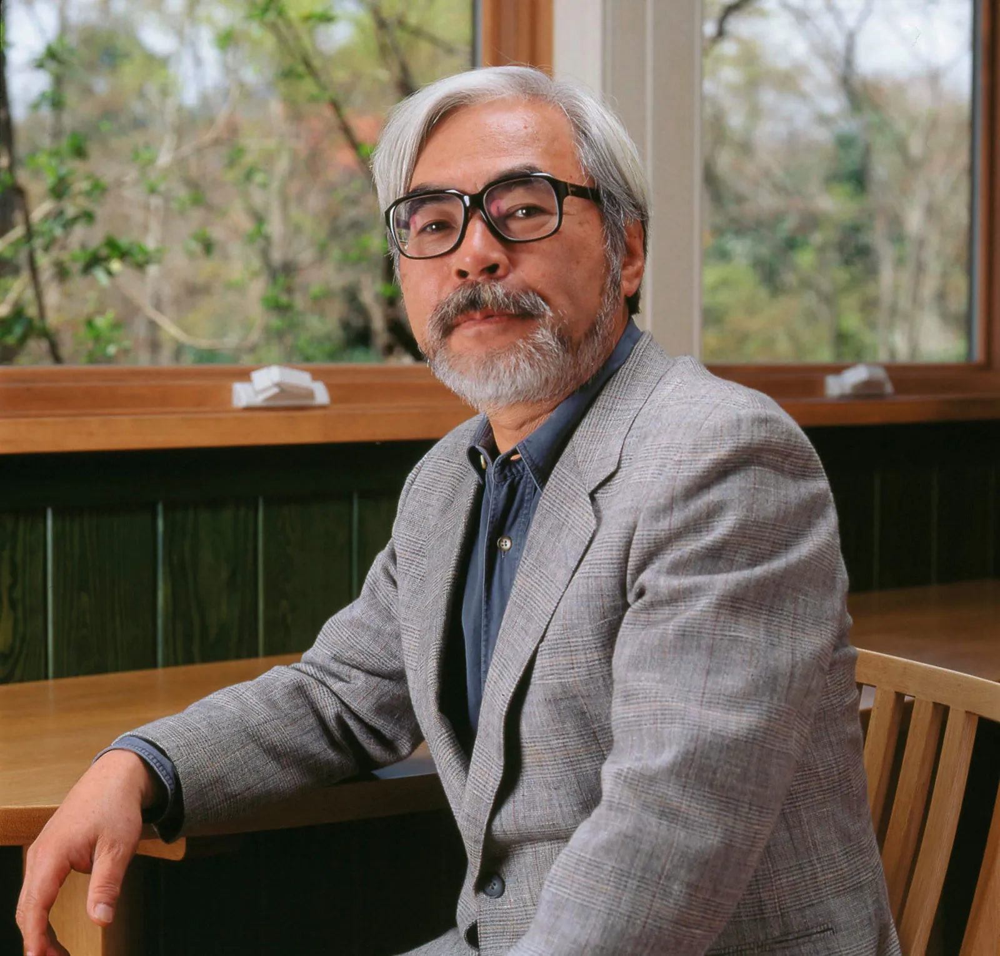

The History of Studio Ghibli
Studio Ghibli was established in 1985 by its two co-producers Hayao Miyazaki and Toshio Suzuki and its director, Isao Takahata, best known for its iconic and beautiful anime films. These creators would go on to broadcast numerous films that shocked the western culture. Ghibli’s films rank highly in Japan’s Box Office, having 6 movies in the top ten out of the 23 produced. Spirited Away (2001) being ranked currently as the 2nd most grossed film in Japan, earning at total of ¥31,680,000,000 ($291 million USD), promptly followed by later movies such as Howls Moving Castle (2001) and Ponyo (2008) in 4th and 5th place.

Origins
Studio Ghibli began with Miyazaki and Takahata working together in the same studio in 1964, in which they formed a friendship over, not knowing the remarkable creations they would make together in the future. This friendship would carry on throughout their careers as they both worked on Japanese Tv shows and movies up until the creation their film Nausicaä of the Valley of the Wind (1984) and establishment of Studio Ghibli in 1985. This original feature film would go on to become the benchmark of the studio and achieve success in the Box Office.
In the production of Nausicaä, Studio Ghibli didn’t exist but was only in the works of starting up
their own organisation. At this stage Miyazaki started to create all his trademarks and a unique design,
style, application of a strong, heroine leads in to his films/ideas and, of course, working on the
astonishing settings and backgrounds the studio is renowned for. Suzuki began his part within the
production team of Nausicaä and to the duo’s surprise the film was a hit, leading to the Miyazaki
and Suzuki to make a company named Tokuma Shoten. This facility would go on to fund and help
Studio Ghibli in future years.

Studio Ghibli first captured the American screen on the release of Princess Mononoke (1997) and was the first film of theirs to be on display to more than just their country, Japan. Due to the complications of broadcasting Nausicaä of the Valley of the Wind (1984) to the United States , the release of Princess Mononoke (1997) made more of a statement than Ghibli's previous attempt to expand its horizons. When Nausicaä of the Valley of the Wind (1984) was sent to American Harvey Weinstein, he decided to heavily cut, edit and rename the piece to “Warriors of the Wind”, which cut out approximately 22 minutes out of the original show. This resulted in the underperformance of the movie in the West and caused Miyazaki to enforce a strict no edits policy. In which Weinstein challenged by stating that his changes made the movie “more marketable for a US audience.”, however Toshio Suzuki stepped up to Harvey’s ignorant behaviour and sent him an authentic Katana Samuria sword with a message reading “No Cuts”. This resulted in the original Nausicaä of the Valley of the Wind to be released unedited and for further Studio Ghibli films to be worldwide, which was seen in the success of Princess Mononoke (1997).
Journey to Fame
Studio Ghibli first captured the American screen on the release of Princess Mononoke (1997) and was the first film of theirs to be on display to more than just their country, Japan. Due to the complications of broadcasting Nausicaä of the Valley of the Wind (1984) to the United States , the release of Princess Mononoke (1997) made more of a statement than Ghibli's previous attempt to expand its horizons. When Nausicaä of the Valley of the Wind (1984) was sent to American Harvey Weinstein, he decided to heavily cut, edit and rename the piece to “Warriors of the Wind”, which cut out approximately 22 minutes out of the original show. This resulted in the underperformance of the movie in the West and caused Miyazaki to enforce a strict no edits policy. In which Weinstein challenged by stating that his changes made the movie “more marketable for a US audience.”, however Toshio Suzuki stepped up to Harvey’s ignorant behaviour and sent him an authentic Katana Samuria sword with a message reading “No Cuts”. This resulted in the original Nausicaä of the Valley of the Wind to be released unedited and for further Studio Ghibli films to be worldwide, which was seen in the success of Princess Mononoke (1997).
Shooting for the Stars
Once Princess Mononoke hit screens without the shackles of Harvey’s edits, it displayed the Eastern film’s talent and following this ice-breaker, the release Spirited Away (2001) shot up to the highest-grossing Japanese film of all time, in which it maintained for 19 years, resulting in placing Studio Ghibli on a global pedestal. Just like Princess Mononoke (1997), Spirited Away (2001) won the Japan Academy prize for Picture of the Year, but best of all went on to then win an Oscar for the best-animated feature. This made history for being the first and only non-English speaking, hand-drawn anime film to ever win this award, which cemented it in history. Furthermore, the film then went on to win the Golden Bear prize at the Berlin International Film Festival and announced that Spirited Away (2001) will always be regarded as one of the greatest animated films of all time. This astronomic success made Studio Ghibli a known powerhouse film creator and pathed the way for all its other amazing future creations, such as Howl’s Moving Castle (2008). Miyazaki and his amazing team are truly deserving of all their success due to effort, quality and enjoyment that they give to their enormous global fan base.Here is Hayao Miyazaki cofounder of Studio Ghibli
This website is for educational purposes only. All credit goes to the origional creators/authors/owners.